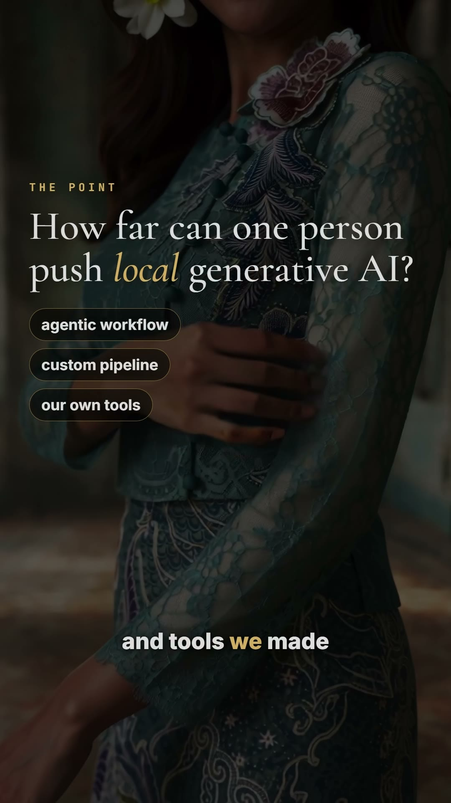
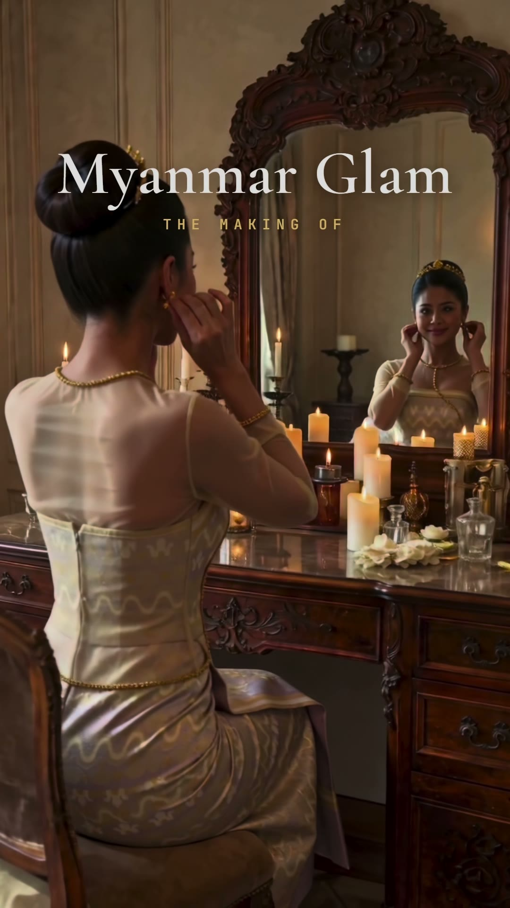
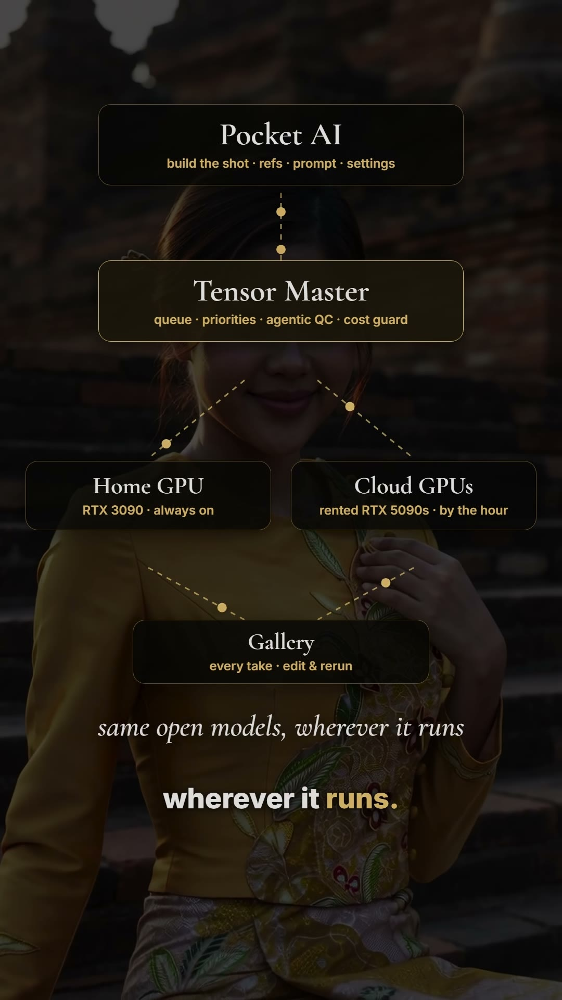
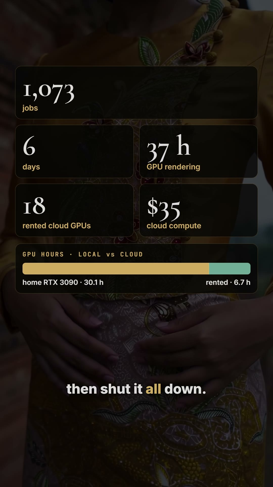
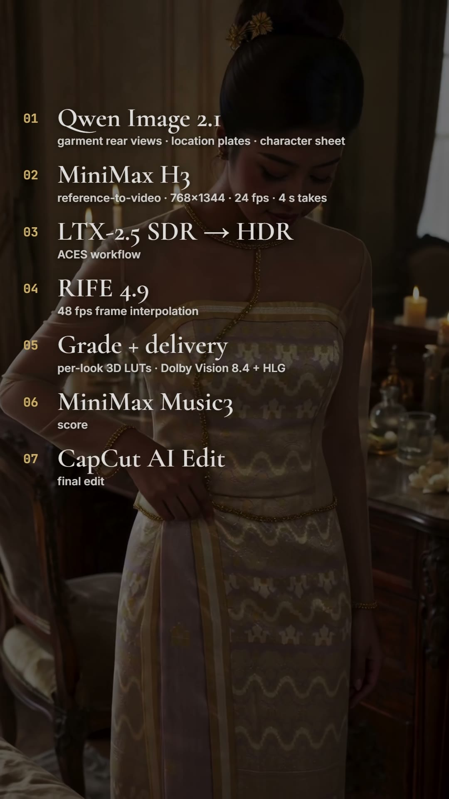
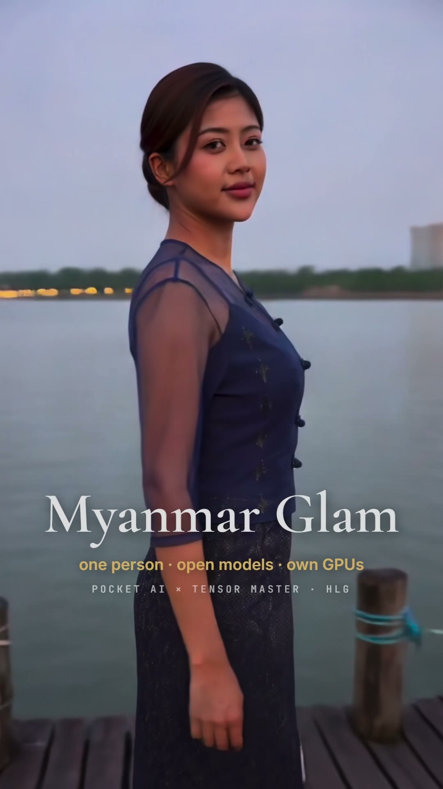
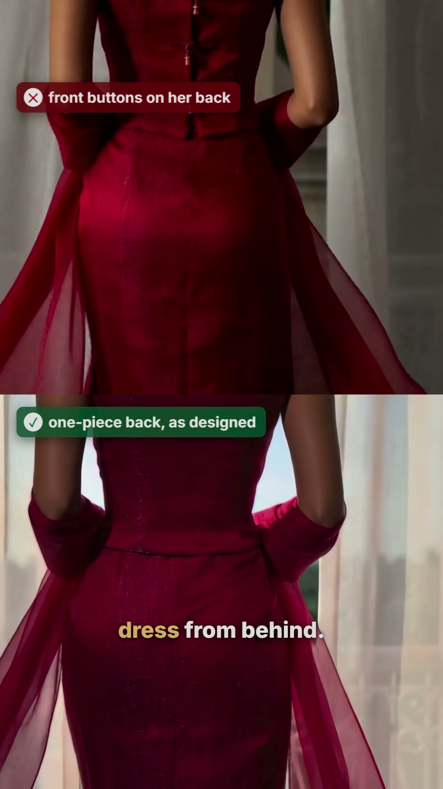
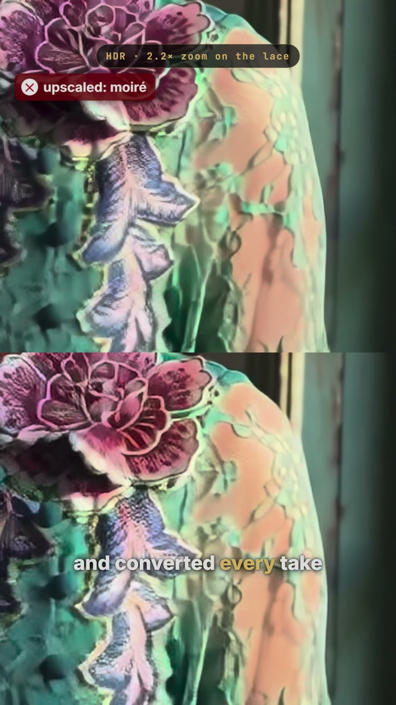

The making of Myanmar Glam
One person, a home GPU, a few rented ones, open generative models and an agentic workflow. About a week.
Best on an HDR screen: iPhone, iPad or a recent Mac in Safari, or Chrome on an HDR display. Other screens get a standard-range version automatically. The stills on this page are HDR too.
The point
Every frame of the couture film was generated. No camera, no set, no model on a runway, and no proprietary generation API: the images, the video, the HDR conversion and this narration all came from open models running on GPUs we control.
How far can one person push local generative AI, with an agentic workflow, a custom pipeline and tools built in-house?


The system
Two tools hold it together. Pocket AI is where a shot gets built: references, prompt, settings. Tensor Master is the control room: it queues every job, ranks it, sends it to the home GPU or to rented cloud GPUs when the queue gets long, and keeps every take re-runnable from the gallery. An agentic workflow sits on top, writing the briefs, checking every take and sending the failures back to the queue.
By the numbers


The pipeline
- Qwen Image 2.1Reference images: a rear view of every garment, location plates, a character sheet for the model.
- MiniMax H3Video in reference-to-video mode: 768×1344, 24 fps, 4-second takes.
- LTX-2.5 SDR → HDRAn ACES workflow that rebuilds the dynamic range at the takes' native size.
- RIFE 4.9Frame interpolation to 48 fps.
- Grade and deliveryPer-look 3D LUTs; Dolby Vision profile 8.4 plus HLG.
- MiniMax Music3Original score for the earlier cuts and for this making-of.
- CapCut AI EditThe final cut of the film, including its soundtrack.


What broke
- The back of the dress. The model invented zippers, or put the front buttons down her spine, until it was shown every garment from behind.
- Shiny, flash-lit faces. The fix was to light her like a real set: soft light from the side, shadows left alone.
- Moiré in HDR. An upscale slipped into the first conversion and turned fine lace into a rippling pattern. Every take was reconverted at its native size.
- Takes that look fine at a glance. A second actress, a hidden cut, odd hands. The agentic QC pass catches these and re-queues them, so the human review only sees what survives.


Made with Pocket AI and Tensor Master, open-weight models on a home RTX 3090 and rented RTX 5090s, and an agentic workflow. Narration: Qwen3-TTS, cloned from the director's voice. Film soundtrack from CapCut; making-of score by MiniMax Music3.